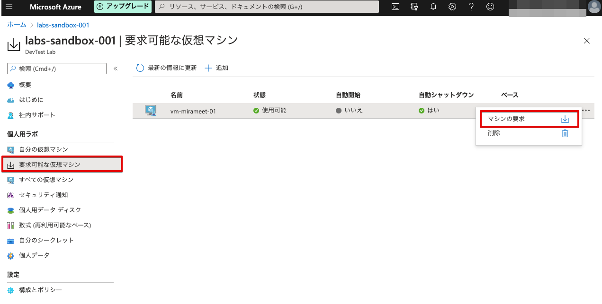

5. カスタムイメージを使いVMを作成する
DevTest Labs内で追加をクリックします．
ベースの選択が表示されるので前述で作成したカスタムイメージを選択します．
選択したら以下のとおり，基本設定の入力を行います．
| 項目名 | 入力値 |
|---|---|
| 仮想マシン名 | 命名は自由ではありますが，vm-mirameet-001とします． |
| ユーザー名 | 自由入力となります． |
| 保存されているシークレットを試用する | 未チェックとします． |
| パスワード | 自由入力となります． |
| 規定のパスワードとして保存する | チェックします． |
| 仮想マシンサイズ | デフォルトのままとします． |
| OSディスクの種類 | Standard HDDとします |
詳細設定を選択し，入力します．
| 項目名 | 入力値 |
|---|---|
| 仮想ネットワーク | 自動で選択されるので，そのままでOKです |
| サブネットセレクター | 自動で選択されので，そのままでOKです |
| IPアドレス | パプリックにします |
| 仮想マシンの有効期限 | 未入力でOKです |
| このマシンを要求可能にする | はいを選択します |
| インスタンス数 | 1 |
入力したら基本設定タブからOKをクリックします．（作成までに10分ほど待ちます）
作成されたらDevTest Labの要求可能な仮想マシンを選択し，マシンの要求をクリックします．

要求が完了すると自分の仮想マシンに移動しますので，作成したVMを選択するとVMの概要へ遷移出来るので選択します．
IPアドレスをパブリックにしたのでドメインが振られています．URLをコピーしてアクセスしてみましょう．
事前に構築されたWebアプリの表示が確認出来ました．

仮想マシンが作れない場合
東日本リージョンに制限がある場合，以下のエラーが発生する可能性があります．

この場合は以下のとおり，失敗した仮想マシンを削除した後，別の仮想マシンサイズを選択し，再度VMを作成します．